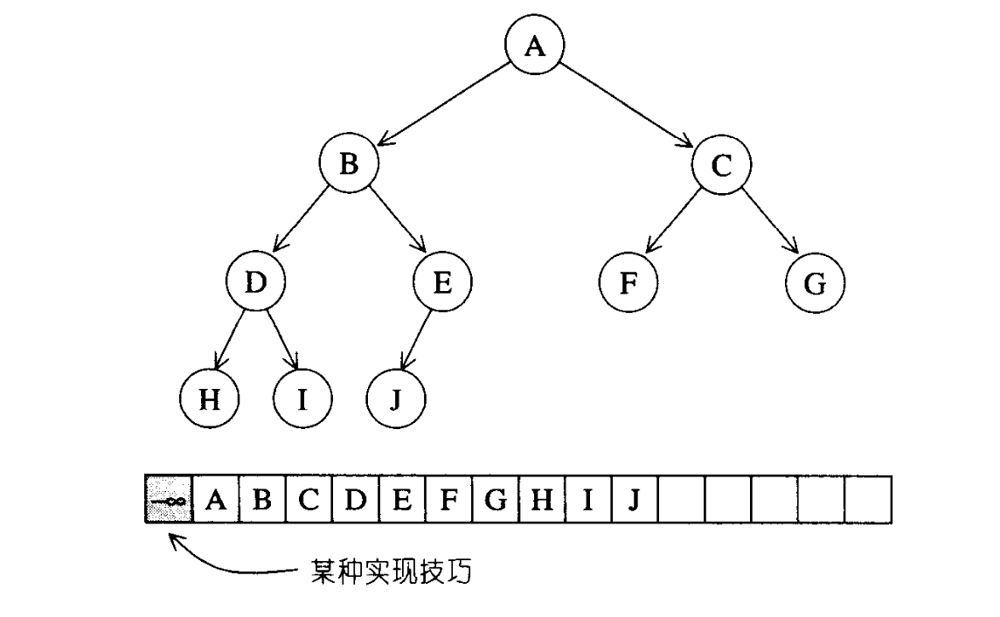

heap 并不属于 STL 容器组件，它是 priority_queue （优先队列）的底层实现机制。但是我们必须要了解 heap（堆）的机制，才能更好的了解 priority_queue（优先队列）的原理。
1. heap 概述
优先队列允许用户以任何次序将任何元素推入容器内，但取出时一定是从优先级最高（也就数数值最大）的元素开始取。如果我们使用 array 或者 list 作为优先队列的底层实现，那么插入操作和取极值操作必然有一个操作的时间复杂度要达到 \(O(n)\) 甚至是 \(O(n^2)\) 级别的，显然这是我们无法接受的。你可能会想到 BST（二叉搜索树）来实现，因为 BST 的插入和取极值操作都是 \(O(logN)\) 的。但是这样的话就有点小题大做了，因为 BST 的实现十分复杂。下面我们来看一看什么是 heap（堆）。
堆其实是一个完全二叉树，整棵树除了最底层的叶节点之外是填满的，同时最底层的叶节点是由左至右，不能有空隙的。正是由于它的没有空隙的性质，我们可以利用 array 来模拟一个完全二叉树。

这里使用一个小技巧，将 array 的 #0 元素保留，那么任意一个节点 \(i\) \[
\begin{aligned}
&Left = 2*i \\ \\
&Right = 2*i + 1 \\ \\
&Father = \frac{i}{2}
\end{aligned}
\] 但是 SGI STL 并没有使用这个小技巧，它的节点间关系为： \[
\begin{aligned}
&Left = 2*i + 1 \\ \\
&Right = 2*i + 2 \\ \\
&Father = \frac{i - 1}{2}
\end{aligned}
\]
我们现在有了数据结构，那么只需要一组 heap 算法来保证插入和删除元素之后继续保持完全二叉树的性质就OK了。另外，根据元素排列方式 heap 可以分为 max-heap 和 min-heap 两种，max-heap 的最大值在根节点，即位于底层 array 的开始处；min-heap 的最小值在根节点，即位于底层 array 的开始处。因为 STL 默认的是 max-heap 所以，接下来我们讨论的内容也是默认为 max-heap。
2. heap 算法
2.1. push_heap 算法
首先，我们将新元素放到 array 的末尾，然后判断这个新加入的元素是否会最大堆的条件，我们执行一个上溯的算法来判断是否符合条件：将新节点与其父节点进行比较，如果大于父节点，则父子对调，继续上溯。
1
2
3
4
5
6
7
8
9
10
11
12
13
| template <class _RandomAccessIterator, class _Distance, class _Tp>
void
__push_heap(_RandomAccessIterator __first,
_Distance __holeIndex, _Distance __topIndex, _Tp __value) {
_Distance __parent = (__holeIndex - 1) / 2;
while (__holeIndex > __topIndex && *(__first + __parent) < __value) {
*(__first + __holeIndex) = *(__first + __parent);
__holeIndex = __parent;
__parent = (__holeIndex - 1) / 2;
}
*(__first + __holeIndex) = __value;
}
|
2.2. pop_heap 算法
与 push_heap 算法相反，pop_heap 算法是使用了自顶向下的调节。首先将根节点与最后一个叶子节点的值交换，交换后可能会破坏最大堆的性质（根节点的值小于左右子节点中的某一个），所以我们采用自顶向下的方法进行调节。
1
2
3
4
| template <class _RandomAccessIterator>
inline void pop_heap(_RandomAccessIterator __first, _RandomAccessIterator __last) {
__pop_heap_aux(__first, __last, __VALUE_TYPE(__first));
}
|
1
2
3
4
5
| template <class _RandomAccessIterator, class _Tp>
inline void __pop_heap_aux(_RandomAccessIterator __first,
_RandomAccessIterator __last, _Tp*) {
__pop_heap(__first, __last - 1, __last - 1, _Tp(*(__last - 1)), __DISTANCE_TYPE(__first));
}
|
1
2
3
4
5
6
| template <class _RandomAccessIterator, class _Tp, class _Distance>
inline void __pop_heap(_RandomAccessIterator __first, _RandomAccessIterator __last,
_RandomAccessIterator __result, _Tp __value, _Distance*) {
*__result = *__first;
__adjust_heap(__first, _Distance(0), _Distance(__last - __first), __value);
}
|
1
2
3
4
5
6
7
8
9
10
11
12
13
14
15
16
17
18
19
20
21
22
23
24
| template <class _RandomAccessIterator, class _Distance, class _Tp>
void __adjust_heap(_RandomAccessIterator __first, _Distance __holeIndex,
_Distance __len, _Tp __value) {
_Distance __topIndex = __holeIndex;
_Distance __secondChild = 2 * __holeIndex + 2;
while (__secondChild < __len) {
if (*(__first + __secondChild) < *(__first + (__secondChild - 1)))
__secondChild--;
*(__first + __holeIndex) = *(__first + __secondChild);
__holeIndex = __secondChild;
__secondChild = 2 * (__secondChild + 1);
}
if (__secondChild == __len) {
*(__first + __holeIndex) = *(__first + (__secondChild - 1));
__holeIndex = __secondChild - 1;
}
__push_heap(__first, __holeIndex, __topIndex, __value);
}
|
注意，pop_heap 之后，最大元素只是被置放于底部容器的最尾端，尚未被取走。如果要取其值，可以使用底部容器（vector）所提供的 back() 操作函数。如果要移除它，可以使用底部容器（vector）所提供的 pop_back() 操作函数。
2.3. sort_heap 算法
既然每次 pop_heap() 可获得 heap 中键值最大的元素，如果持续对整个 heap 做 pop_heap() 操作，每次将操作范围从后向前缩减一个元素，当程序执行完毕时，我们便有了一个递增序列。
1
2
3
4
5
6
7
| template <class _RandomAccessIterator>
void sort_heap(_RandomAccessIterator __first, _RandomAccessIterator __last) {
while (__last - __first > 1)
pop_heap(__first, __last--);
}
|
2.4. make_heap 算法
这个算法用来将一段现有的数据转化为一个heap，即将一个迭代器对的内容构造成最大堆。代码如下：
1
2
3
4
| template <class _RandomAccessIterator>
inline void make_heap(_RandomAccessIterator __first, _RandomAccessIterator __last) {
__make_heap(__first, __last, __VALUE_TYPE(__first), __DISTANCE_TYPE(__first));
}
|
1
2
3
4
5
6
7
8
9
10
11
12
13
14
15
| template <class _RandomAccessIterator, class _Tp, class _Distance>
void __make_heap(_RandomAccessIterator __first,
_RandomAccessIterator __last, _Tp*, _Distance*) {
if (__last - __first < 2) return;
_Distance __len = __last - __first;
_Distance __parent = (__len - 2)/2;
while (true) {
__adjust_heap(__first, __parent, __len, _Tp(*(__first + __parent)));
if (__parent == 0) return;
__parent--;
}
}
|
3. priority_queue
priority_queue不属于容器，它和 queue、stack 一样属于配接器（adapter）。因为它们是以其他容器为底层容器实现的。
1
2
3
4
5
6
7
8
9
10
11
12
13
14
15
16
17
18
19
20
21
22
23
24
25
26
27
28
29
30
31
32
33
34
35
36
37
38
39
40
41
42
43
44
45
46
| template <class _Tp,
class _Sequence __STL_DEPENDENT_DEFAULT_TMPL(vector<_Tp>),
class _Compare
__STL_DEPENDENT_DEFAULT_TMPL(less<typename _Sequence::value_type>) >
class priority_queue {
public:
typedef typename _Sequence::value_type value_type;
typedef typename _Sequence::size_type size_type;
typedef _Sequence container_type;
typedef typename _Sequence::reference reference;
typedef typename _Sequence::const_reference const_reference;
protected:
_Sequence c;
_Compare comp;
public:
priority_queue() : c() {}
explicit priority_queue(const _Compare& __x) : c(), comp(__x) {}
priority_queue(const _Compare& __x, const _Sequence& __s)
: c(__s), comp(__x)
{ make_heap(c.begin(), c.end(), comp); }
bool empty() const { return c.empty(); }
size_type size() const { return c.size(); }
const_reference top() const { return c.front(); }
void push(const value_type& __x) {
__STL_TRY {
c.push_back(__x);
push_heap(c.begin(), c.end(), comp);
}
__STL_UNWIND(c.clear());
}
void pop() {
__STL_TRY {
pop_heap(c.begin(), c.end(), comp);
c.pop_back();
}
__STL_UNWIND(c.clear());
}
|
4. 注意
我们可以看到 priority_queue 接受三个模板参数<Type, Container, Compare>，我们如果想定义一个最小堆的话，就要改变 Compare 的值，因为 Compare 是第三个参数，所以我们在指定的时候， Container 也要指定。
1
2
| priority_queue<int, vector<int>, greater<int> > p;
priority_queue<int, vector<int>, less<int> > p;
|
为什么 greater 对应最小堆，less 对应最大堆？
这个问题，当我们理解了 push_heap 函数的操作，就恍然大悟了。
1
2
3
4
5
6
7
8
9
10
|
while (__holeIndex > __topIndex && *(__first + __parent) < __value) {
}
while (__holeIndex > __topIndex && __comp(*(__first + __parent), __value)) {
}
|
push_heap 使用的上溯操作，我们先将待插入的值放到末尾，然后比较它的值和父节点的值。
如果父节点 < 插入值，那么插入值向上移动就相当于大值前移，所以是最大堆。
如果父节点 > 插入值，那么插入值向上移动就相当于小值前移，所以是最小堆。